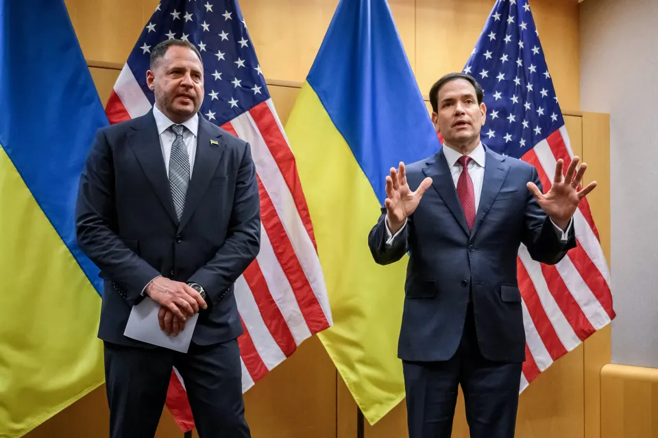

世界苦茶11月24日新闻 | 30条 | 美国航母进出南海

美国航母进出南海 | 王毅就中日风波表态 | 美欧乌就乌克兰和平方案进行讨论 | 日本向台湾岛屿部署导弹
苦茶数据
美元兑人民币：7.10（昨日7.10，前日7.10）
美元兑日元：156.68（昨日157.12，前日157.09）
上证指数：3843（昨日3834，前日3931)
标普500指数：休市（昨日6602，前日6538）
比特币：86714（昨日87109，前日84375）
布伦特原油：62.54（昨日62.52，前日64.04）
中国新闻
• 中日关系恶化 中国日料餐馆大量订位取消。
中日关系恶化影响持续扩大，多家中国的日本料理餐馆大量订位被取消，有店主感叹生意前景堪忧。日本首相高市早苗本月初发表“台湾有事”论以来，中日紧张局势不断升温，波及在华日本相关行业。据日本放送协会报道，在北京经营日料店10年的店主谷冈一幸透露，自本月10日起陆续接到取消预订的通知。他透露，截至12月上旬的约一半预订已被取消，新预订也大幅减少，不得不更谨慎采购食材，“明年店铺能否维持经营很难说”。路透社则引述上海另一日料店店主伊藤说：“每次发生这样的重大事件，我们都非常痛苦，因为中日关系一有波动，我们的心就随之起伏。
• 两艘美国航母“一进一出”南中国海。
美国海军两艘航空母舰同一天内分别进出南中国海水域，凸显美国在南中国海维持稳定航母部署。美国海军新闻网当地时间上星期五报道，原本驻扎在日本的华盛顿号航母17日经吕宋海峡进入南中国海，尼米兹号航母则于同日离开南中国海。中国智库“南海战略态势感知”18日在微博发布航迹图，指尼米兹号和华盛顿号在南中国海同个水域形成“一进一出”格局。上月26日，尼米兹号刚在南中国海水域发生罕见双机连续坠毁事故。一架MH-60R海鹰直升机和一架F/A-18F超级大黄蜂战斗机在执行例行任务时先后坠海，机组人员均获救。“南海战略态势感知”贴文指出，华盛顿号进入南中国海后驶向尼米兹号事故地点附近，似乎是为接替后者航母打击群。
• 王毅首度就中日风波表态 学者：北京或为“台湾有事论”划两条新底线。
中国大陆外长王毅上周末出访中亚期间首度就近期中日风波表态，不点名批评日本首相高市早苗发表“台湾有事论”，并向日本发出三个“绝不允许”警告。这是高市11月7日在国会暗示日本可能武力介入台海问题、导致中日关系陷入僵局以来，王毅首次公开表态，也是中共高层首次公开发声。受访学者认为，王毅表态的核心诉求仍是要高市撤回涉台言论，但由于撤回难度大，预料中日将陷入长期对立。据中国外交部官网消息，王毅星期六在塔吉克斯坦首都杜尚别与塔国外长穆赫里丁举行首次战略对话中，先向日本发出三个“绝不允许”的警告：绝不允许日本右翼势力开历史倒车，绝不允许外部势力染指台湾，绝不允许日本军国主义死灰复燃。
• 中国多起死伤事故消息姗姗来迟 官方通报成“全民报纸”。
“一场死四⼈的事故，官⽅为何能拖⼋天才公布？”“十堰车撞人事件已逾48小时，我在等一份官方通报” 中国江苏省启东市和湖北省十堰市，10月下旬先后发生景区观光车坠海和小学外撞人事件，分别造成四人遇难和一死四重伤。两地官方分别在事发八天和三天后的深夜，才首次对外通报事故，一时舆论哗然。今年4月以来，中国引起全国关注的公共安全死伤事件中，至少10起的首次通报时间是在事发两天后。一些事故更是在事发超过10天后，在外省媒体引述知情人士和网民爆料报道后，当局才发布通报。
• 江苏科技大学，骗子当上首席科学家。
在江苏科技大学材料学院担任两年“首席科学家”“博士生导师”的郭伟，近日被媒体爆出履历全面造假，他的博士学历、顶刊论文、国家级奖项等核心信息也都是虚构或冒用。11月18日，江苏科技大学发布消息称，针对该校教师郭伟涉嫌学术不端的举报，“经调查取证，认定郭某存在严重学术不端行为”，校方解除与郭伟的聘用协议，并向公安机关报案，“目前案件正在侦办过程中”。近些年来，各类诈骗案件层出不穷，不要说经济和社会层面，就连政治骗子也不少见。2017年被查的司法部党组成员、政治部主任卢恩光，就是一名年龄、学历、入党材料、工作经历、家庭情况都造假的“五假干部”。
• 德国总理梅尔茨计划明年初访问中国。
德国总理梅尔茨计划明年初访问中国 2025年11月23日德国总理梅尔茨在二十国集团峰会期间谈及会晤中国总理李强，并告知他访华的日程已基本敲定。德国总理梅尔茨宣布将于明年年初访问中国。默茨周日在约翰内斯堡举行的二十国集团峰会结束后，计划会晤中国总理李强。他对记者表示，“这次会谈也是对我明年访华的一次准备。”他说，访华日期已定为明年年初。中国国家主席习近平没有出席本次G20峰会，总理李强是中国的最高代表。据路透社报道，梅尔茨默茨对同李强的会谈寄予很大希望。
印太新闻
• 日本向近台湾岛屿部署中程导弹，强调和美国合作增加对中国威慑力。
据彭博报道，日本防卫大臣在访问接近台湾的一个军事基地时表示，向这一地区部署导弹的计划正在按部就班推进。当前，东京与北京围绕台湾问题的紧张局势持续升温。小泉进次郎在周日结束对日本南部与那国岛基地的首次访问时对记者表示，“这一部署有助于降低我们国家遭受武装攻击的可能性。认为这会加剧地区紧张局势的观点并不准确。” 日本计划在与那国岛部署中程地对空导弹，作为在南部岛链军力扩张的一部分。与那国岛距离台湾约110公里。高市早苗在11月7日曾表示，在理论上，如果中国攻击台湾，日本可能会与其他国家联合出兵。这一表态引发北京强烈反应。随后，高市早苗又回到日本政府长期坚持的立场。
• 分析人士称：印度在中印边界的空军基地是基础设施升级，并非威胁。
印度本月早些时候在与中国有争议的边界附近启用了一座高海拔空军基地，分析人士认为这标志着其长期升级边境基础设施的努力已见成效，而非对北京构成威胁。多家媒体报道称，穆德-尼奥玛空军基地海拔约13,700英尺，距离划定印中两国的事实边界——实际控制线仅约30公里。11月13日，印度空军参谋长阿玛尔·普里特·辛格表示，一架C-130J运输机曾在该基地降落，据称这是印度空军首次公开承认有飞机在穆德-尼奥玛站降落。尽管该空基地具有明显的战略意义，分析人士表示，北京更可能将其视为新德里长期升级边境基础设施的一部分，而非直接对抗，同时在争议地区北京仍保持优势，这座空军基地不太可能阻碍局势缓和。
• 越南洪灾已造成至少90人死亡、12人失踪。
越南暴雨引发洪水和山体滑坡，造成至少90人死亡，12人失踪。越南政府称全国约有186，000户房屋受损，超过300万只牲畜被冲走。官员估计损失达数亿英镑。位于山区的达克拉克省受灾严重，自11月16日以来已记录超过60人死亡，法新社报道。近几个月来，越南已接连遭遇极端天气，此前台风卡尔梅吉和布阿洛伊在数周内先后登陆。官员称，周日上午约有258，000人断电，高速公路和铁路部分路段被阻断。军警力量已动员前往重灾区救援。政府表示，受灾最严重的五省为广义省，嘉莱省，达克拉克省，庆和省和林同省，集中在越南南部和中南部地区。
科技新闻
• 因应中俄空间能力 德国政府通过太空安全战略。
因应中俄空间能力 德国政府通过太空安全战略 2025年11月23日汽车、船舶和飞行的导航、卫星电视——在太空实施的破坏会在地球上产生直接影响。为保护卫星和通信安全，德国政府制定了一份太空安全战略。德国联邦政府内阁通过了一份太空安全战略，旨在更好地保护德国免受来自太空的威胁。这份长达47页的文件指出：“在太空领域，我们希望德国成为一个具备可信的威慑力量和防御能力的国家。”文件描述了太空领域的危险和威胁，并为国家安全提出了相关建议。文件重点关注卫星和通信技术的保护。德国国防部长皮斯托利乌斯表示：“任何人都能想象到，对卫星系统进行有效的太空打击会造成怎样的后果。它足以瘫痪整个国家。
• AI最危险的用途之一：青少年向其寻求心理健康帮助。
研究人员测试了四款领先的人工智能聊天机器人：ChatGPT、Claude、Gemini和Meta AI，在与冒充青少年的研究人员进行心理健康对话时的表现。所有这些平台都常常未能识别心理健康状况的迹象，包括对幻觉、偏执思维、饮食失调行为、躁狂症状、自残和抑郁症状的描述。这些平台继续提供一般性建议，而不是引导青少年寻求紧急的专业帮助。斯坦福医学院 Brainstorm Lab 的主任尼娜·瓦桑博士说，青少年是这项新技术的早期采用者，但他们面临更高的风险，因为他们的大脑、身份认同和批判性思维能力都仍在发育和形成中。她补充称，此外，青少年有寻求认可的倾向，而聊天机器人即使在不合理的情况下也常常提供这种认可。
经济新闻
• 李强吁意大利为中企提供公平营商环境。
中国总理李强与意大利总理梅洛尼会面时，呼吁意大利为中国企业赴当地投资提供公平、透明、非歧视、可预期的营商环境。据新华社报道，李强当地时间星期六在南非约翰内斯堡与梅洛尼会面。李强指出，今年是中意建交55周年，中国愿同意大利进一步弘扬传统友好，加强发展战略对接，打造更加稳定、更富成果的全面战略伙伴关系。李强表明，中国愿同意大利持续推进双向开放，加强市场、产业等联通对接，推动双边贸易优化平衡发展，做强传统合作优势，拓展新兴产业交流合作，促进共同发展繁荣。
• 发展中国家在南非举行的二十国集团峰会上敦促采取气候行动并要求债务减免。
出席在南非举行的二十国集团峰会的较贫穷国家，借此机会向各国领导人施压，要求在气候行动和高额债务问题上采取更多措施，这些问题直接影响发展中国家。它们也试图将自身定位为在采矿、科技与人工智能等领域具有许多可供合作之处的经济伙伴。许多国家称赞南非在即将把轮值主席国交接给美国之际，推动以包容性议程为主、优先考虑较贫穷国家需求的做法。美国因总统唐纳德·特朗普声称南非对其阿非利卡人白人少数群体实施暴力迫害，而抵制了旨在将发达与发展中国家聚集一堂的约翰内斯堡会议。除了G20成员国，非洲联盟与欧盟外，许多发展中国家以嘉宾身份受邀出席。
• 欧盟如何驱散内部气候顽疾并挽救了一个脆弱的COP30协议。
欧盟带着清洗自身气候“魔鬼”的期望来到今年的第30届缔约方大会。在某种程度上，他们做到了——但随后又发现了新的问题。经历了一年的内讧，并在联合国年会开幕前夕通过了一项关于新增减排目标的最后时刻协议后，欧盟试图为全球加大应对气候变化的努力辩护。但在COP30的亚马逊主办城市贝伦，这个由27国组成的集团面临着一个鲜明的地缘政治现实。在过去会议上曾与欧洲人一道推动更多气候行动的美国缺席后，欧盟难以抗衡中国、印度、沙特阿拉伯及其他崛起经济体的合力阻力。
• 在美国缺席之际，中国在二十国集团峰会上推动多边主义、团结与自由贸易。
在G20峰会上，中国推动多边主义、团结与自由贸易，美国抵制峰会之际中国国务院总理李强呼吁改革以西方为主导的主要国际组织，称发展中国家必须拥有更大的话语权 在周六约翰内斯堡举行的领导人大会上，李强指出了各类国际机构面临的挑战。新华社报道称，他表示，“面对治理难题，我们要与时俱进，主动维护多边主义。”李强未直接点名美国，但称各方利益分歧以及一些全球合作机制的不足，是国际团结的主要障碍。“面对脆弱的全球经济复苏，我们必须团结合作，坚定维护自由贸易，构建开放的世界经济，”李强说。“面对分歧和冲突，应求同存异、主动寻找最大公约数。”“并通过平等协商化解争端和摩擦，推动解决各方合理关切。
• 中国第三号高官赵乐际呼吁加强与新西兰的贸易联系。
中国第三号官员赵乐际在具有里程碑意义的访问中呼吁与新西兰加强经贸联系 赵乐际在新西兰为期四天的行程后抵达澳大利亚，这是自2005年以来中国最高立法者的首次此类访问 中国第三号高官，全国人大常委会委员长在对这一太平洋岛国为期四天的访问中，承诺与新西兰建立“真诚”友谊，并呼吁两国加强经济联系。赵乐际于周六结束对新西兰的访问，这是中国最高立法机构负责人二十年来的首次访新。访问期间，赵在奥克兰与新西兰总理克里斯托弗·卢森会面，并呼吁两国“推动”贸易和投资关系，特别是在绿色转型，数字经济，人工智能和互联互通等领域的合作。中国外交部称，赵指出，希望中纽深化互利合作。
俄乌战争
**• 美国和乌克兰11月23日就28点计划的会谈取得进展，但细节较少。 **
美国国务卿鲁比奥称赞会谈是“整个进程中迄今为止最富有成效、最有意义的会议”，双方正对28点计划进行调整，有望进一步缩小分歧。鲁比奥还淡化了特朗普设定的最后期限，称无论是哪一天，都希望能够尽快，因为有人正在死去。鲁比奥说，任何协议最终仍需俄罗斯同意。乌克兰总统幕僚长叶尔马克亦称赞会谈取得了非常好的进展，正朝着公正而持久的和平迈进。泽连斯基也赞扬了会谈取得了“实质性”成果，“有迹象表明特朗普总统团队正在倾听”乌克兰的声音。他还敦促乌克兰人团结。会谈开始前，特朗普称乌克兰领导层对美国的努力“毫无感激”，欧洲也仍在从俄罗斯购买石油，但他并未批评俄罗斯。会谈后，鲁比奥称，特朗普对进展感到满意。叶尔马克和泽连斯基则再次感谢美国和特朗普。知情人士称，美乌官员正在讨论泽连斯基最早于本周与特朗普会谈的可能性。两人将讨论28点计划中诸如领土问题等敏感问题。但目前尚无确切日期。乌克兰代表团在会谈前还与英法德的国家安全顾问会面。英法德提出了修订版的计划。该版本提议乌克兰从美国获得类似北约第五条的安全保障；软化了限制北约在欧洲存在的措辞；删除了领土割让，改为将接触线作为未来谈判基础；将乌克兰在100天内举行选举改为尽快举行选举；删除了美俄投资的内容，改为俄罗斯向乌克兰支付赔偿；将乌克兰军队规模的限制由60万改为“和平时期”80万。部分两党参议员表示，鲁比奥22日告诉他们计划起源于俄罗斯，实际上是莫斯科的“愿望清单”，而非美国主导。《卫报》此前分析，计划中部分措辞似乎最初由俄语写成。虽然该说法被国务院以及鲁比奥本人否认。但仍在美国国内引发争议。
• 欧洲提出自己的乌克兰和平方案，对特朗普方案进行了大修。
据路透报道，欧洲在美国草拟的28点乌克兰和平计划基础上提出了自己的方案，由英国、法国和德国三国起草，对美国方案逐条提出修改和删除。文本如下： 1.重新确认乌克兰的主权。2.俄罗斯与乌克兰以及北约之间将达成全面、完整的互不侵略协议。过去30年中的所有含糊不清之处都将解决。4.在签署和平协议后，俄罗斯与北约之间将启动对话，处理所有安全关切，营造缓和环境，确保全球安全，并增加未来互联与经济发展的机会。5.乌克兰将获得强有力的安全保障。6.乌克兰在和平时期的军队规模上限为80万。7.乌克兰加入北约取决于北约成员的共识，而这个共识目前不存在。8.北约同意在和平时期不在乌克兰永久驻扎受北约指挥的部队等。
• 彭博社称，美俄就乌克兰进行的秘密和平谈判排除了白宫的关键官员。
彭博社报道，几周来美俄之间秘密就乌克兰问题进行的和谈排除了白宫关键官员。彭博社11月23日报道称，美国总统唐纳德·特朗普此前曾表示，乌克兰必须在美国感恩节之前作出决定。报道称，在由美国副总统JD·万斯和特使史蒂夫·威特科夫牵头的努力中，国务卿马可·卢比奥很晚才得知此事，特朗普也是在最后一刻获悉并批准了拟定方案。该提案遭到美国国会议员，欧洲领导人和乌克兰的争议，他们称该草案是对俄罗斯的奖赏。彭博社称，美国陆军部长丹·德里斯科尔曾对乌克兰和欧洲官员表示，基辅处境艰难，必须放弃领土，且特朗普已失去耐心。
• 布查对和平方案中大赦条款感到被辜负，反映出整个乌克兰的阴郁氛围。
乌克兰和平计划使饱受战火蹂躏的国家情绪变得沉重 乌克兰和平计划使饱受战火蹂躏的国家情绪变得沉重 大规模墓穴和弹痕累累的教堂标志着基辅郊区布查在过去俄罗斯占领期间的折磨，而在那里受创的居民如今面临新的痛苦：一项由美国主导的和平提议将为暴行肇事者提供战后全面特赦。对布查的幸存者而言——那里在2022年有数百名乌克兰人被杀——拟议的特赦被视为令人幻灭，而非和解。这种感受在其他社区也有体现，反映出乌克兰各地对免除俄罗斯及其军队和官员被指控罪行责任的后果的更广泛担忧。
• “对人类体面的公然侮辱”——欧洲议员在新公开信中警告特朗普不要对俄罗斯绥靖。
欧洲议员在新公开信中警告特朗普不要绥靖俄罗斯 一群欧洲议员联名致信，警告美国总统唐纳德·特朗普不要迎合俄罗斯。47名签署者来自爱尔兰到北马其顿等多个国家。该信于11月23日发给《基辅独立报》。此声明紧随特朗普政府泄露的28点和平计划引发的公众强烈抗议之后：许多人认为该计划是在要求乌克兰在俄罗斯发动四年残酷全面入侵后向其投降。“对侵略者俄罗斯的任何绥靖，对作为受害方的乌克兰施加任何压力，在道义上都是可耻的，是对人类体面的侮辱。向俄罗斯低头就是背弃共同的价值观，把自由世界推入无政府和混乱之中，”信中写道。“强有力的美国领导是唯一的希望。一个怯懦的美国永远不可能再次伟大。
• 过去24小时内俄罗斯在乌克兰各地的袭击至少造成6人死亡、36人受伤。
当地当局11月23日报道，过去一天内俄罗斯袭击造成乌克兰境内至少6人死亡，36人受伤。乌克兰空军称，夜间俄方向乌克兰发射了98架无人机，其中约60架为“沙赫德”式。报告称，乌克兰防空击落了69架无人机，另有27架在12个地点击中目标。俄军还使用多管火箭炮，滑翔炸弹，炮火和一型第一视角无人机袭击前线附近的民用区域。中央城市第聂伯的一次无人机袭击击中了一栋居民楼，造成14人受伤，其中包括一名11岁女童，当地州长报告称。第聂伯罗彼得罗夫斯克州其他地区另有两人受伤。乌克兰东南部城市扎波罗热也遭到无人机袭击。扎波罗热州州长伊万·费多洛夫在电报上写道。
• 据报道，乌克兰军方袭击了位于莫斯科州的一座发电厂。
编者按：此事正在发展中，报道会持续更新。俄罗斯电报媒体频道报道称，11月23日夜间，乌克兰军方据称对莫斯科州的沙图拉火力发电厂发动了打击。社交媒体上发布的疑似视频显示，该厂在遭受弹丸袭击后发生巨大爆炸并引发随后的火灾。《基辅独立报》暂时无法核实相关报道，乌克兰军方也尚未就该次所谓袭击发表评论。沙图拉火力发电厂位于俄罗斯首都以东约120公里，属莫斯科州郊区。夜间早些时候，莫斯科市长谢尔盖·索比亚宁报告称，两架乌克兰无人机在飞往首都途中被击落。俄罗斯民航局也报告称，莫斯科朱可夫斯基机场在该地区出现无人机活动时一度暂时停飞。
世界新闻
• 博尔索纳罗称电子脚环损坏是因偏执所致。
前巴西总统、因策划政变被定罪的贾伊尔·博尔索纳罗将他损坏脚踝监测器的行为归咎于药物引发的“偏执”——此前一天他被从软禁状态转为拘押。法院文件显示，在巴西利亚的一次听证会上，他承认周五曾用烙铁试图打开监测器，直到“恢复理智”为止。他表示并无逃跑意图。官员称，这位70岁的右翼政客在家外支持者守夜活动前被拘捕，因其具有潜逃风险。他将继续被拘押。今年9月，博尔索纳罗因策划政变被判处27年多监禁。目前他被关押在首都的一处警察局。博尔索纳罗的法律困境激起了同为右翼民粹主义者的美国总统唐纳德·特朗普的不满。
**• 以色列11月23日空袭黎巴嫩首都贝鲁特南郊一栋多层住宅楼，杀死了黎巴嫩真主党高级军事指挥官阿里·塔巴塔拜及其他4名真主党成员，另有28人受伤。 **
真主党哀悼塔巴塔拜为“伟大的圣战指挥官”，“直至生命最后一刻都致力于对抗以色列敌人”。以色列则表示塔巴塔拜指挥大部分真主党武装部队，致力于恢复真主党对以色列战争的准备状态。黎巴嫩总统约瑟夫·奥恩敦促国际社会介入，阻止以色列袭击。
• 尽管在白宫会面气氛友好，曼达尼仍坚持对特朗普的批评。
在周五与总统唐纳德·特朗普进行了一次出人意料的友好白宫会面后，当选纽约市长佐赫兰·马姆达尼在周日播出的采访中并未撤回此前对特朗普“像暴君和法西斯”言论的批评。新当选的民主社会主义者与这位共和党总统过去曾互相激烈抨击。特朗普在马姆达尼获胜后在社交媒体上称其为“100%共产主义疯子”，而马姆达尼则表示特朗普在攻击民主。然而，两位政治对手在周五会面后面带微笑走出，并谈到了共同的目标。在周六接受“Meet the Press”节目采访时，就过去的批评被追问时，马姆达尼表示他的看法没有改变。
• 贝都因夫妇遇害后，叙利亚霍姆斯的宗派紧张局势升级。
叙利亚国家通讯社SANA报道，周日在古姆斯省扎伊达尔镇一户人家发现的一对来自贝都因部族的夫妇尸体引发了新的教派紧张。报道说，尸体被发现于其住处，“妻子身体有被烧伤的迹象”，并且“现场留有教派口号”。古姆斯内务安全负责人、少将穆尔哈夫·纳桑在一份声明中表示，“此次袭击似乎旨在煽动教派分裂、破坏地区稳定”。总部设在英国的战争监测组织叙利亚人权观察称，案发后，受害者所属的巴尼·哈立德部族成员涌入古姆斯一个阿拉维派为主的社区，实施了“纵火和破坏”等行为，针对数十处住宅，车辆和私人财产，并进行了无差别开火。观察站称数十人受伤。
• 英国首相建议前安德鲁王子应在美国对杰弗里·爱泼斯坦的调查中作证。
英国首相暗示，前王子安德鲁应在美国对杰弗里·爱泼斯坦的调查中作证 伦敦——随着英国首相暗示前王子安德鲁应当出庭作证，外界对他向美国国会委员会提供证词的压力正在增加。首相基尔·斯塔默并未就查尔斯三世国王的这位蒙羞弟弟发表直接评论，但在随团出席约翰内斯堡二十国集团峰会时对随行记者表示，作为“一般原则”，人们应当向调查人员提供证据。“我不会评论他的具体个案，”斯塔默说。
• 面临美国可能发动军事行动威胁的委内瑞拉人说：“我们更担心的是食物”。
“我们更担心食物。”生活在美国军事威胁下的委内瑞拉人 当尼古拉斯·马杜罗的政府在美国总统唐纳德·特朗普的军事威胁下如履薄冰时，普通委内瑞拉人把时间花在每天想吃什么上。这是周三上午，位于加拉加斯市中心的热门市场昆塔克雷斯波。对于这里的人们来说，冲突可能升级并非主要担忧，他们一边看新闻一边掏钱包，看看有没有足够现金支付。“不会有干预，不会有那种事。真正让我们烦恼的是美元上涨。”亚历杭德罗·奥雷利亚诺一边品着咖啡一边告诉BBC Mundo，等着那些似乎永远不会到来的顾客。过去几周，特朗普政府已向委内瑞拉附近部署数千名军人和军事装备，包括世界上最大的军舰。